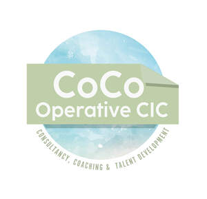

Trade Mark Journal No.2025/037 12 September 2025
UK00004257469 1 September 2025 (41)

- Class 41
- Training consultancy; Management training consultancy services; Business training consultancy services; Training services relating to management consultancy; Education and training consultancy; Coaching; Coaching [training]; Career counselling and coaching; Coaching services; Personal coaching [training]; Life coaching (training); Training or education services in the field of life coaching; Coaching in economic and management matters; Educational services in the nature of coaching; Computerised training in career counselling; Career counselling [training and education advice]; Teacher training services; Education, teaching and training; Training in the field of business management; Training in business management; Career counselling relating to education and training; Education and training in the field of business management; Training of teachers; Meditation training; Training in business skills; Staff training services; Training; Providing of training, teaching and tuition; Business training; Career and vocational training; Training in philosophy; Fitness training services; Business mentoring services; Team building (education); Arrangement of training courses in teaching institutes; Management training services; Training and further training consultancy; Career advisory services (education or training advice); Consultancy relating to physical fitness training; Career counseling [education]; Education services for managerial staff; Arranging professional workshop and training courses; Conducting training seminars for clients; Courses for the development of consulting skills; Personal fitness training services; Personnel training; Organisation of training seminars; Consultancy services relating to the education and training of management and of personnel; Personal development training; Consultancy relating to vocational skills training; Organising of business training; Training for parents in parenting skills; Education and training; Business training services; Career and vocational counselling; Providing training courses on business management; Training services in the field of project management; Courses (Training -) relating to management; Training services; Organisation of training courses; Organisation of training; Teaching of meditation practices.
Coco Operative Community Interest Company